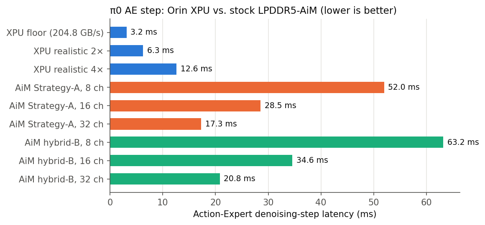
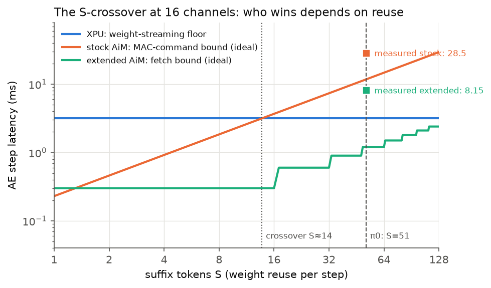

Offloading the Action Expert to Stock LPDDR5-AiM — and Why It Loses 4.5×
Part I showed the π0 Action Expert is memory-bound: 623 MB of weights re-streamed for 38.7 GFLOPs, every step. Processing-in-memory should fix exactly this. We map the AE onto a cycle-level SK hynix AiM-style LPDDR5-PIM simulator at Jetson-Orin memory parity (16 × x16 LPDDR5-6400 channels = 204.8 GB/s) — and the stock offload loses: 28.5 ms per denoising step vs. 6.3 ms for a realistic XPU baseline. This page explains the machine, the mapping, the measured breakdown, and the crossover law that makes a “memory-bound” workload lose on PIM.
Overview
Part III of four. The punchline is a negative result with a precise cause: the stock AiM ISA amortizes each in-bank memory fetch over one vector, one accumulator, and one register mode — and π0's 51-token suffix needs the opposite. Part IV fixes it.
1LPDDR5 in five minutes (read this first)
Before the PIM machine, the plain memory it lives in. If you already know what a row buffer and tCCD are, skip to §1. If not, the three ideas below are all you need for the rest of the page.
Structure: channel → bank → row → column
A phone- or robot-class SoC talks to LPDDR5 over several independent channels. Each channel is 16 data pins (x16) running at 6,400 MT/s, so it can move 12.8 GB/s — Jetson AGX Orin has 16 such channels, 204.8 GB/s in total. Inside a channel are 16 banks (4 bank groups × 4). A bank is a huge grid of capacitors, the cell array, organised in rows and columns. You cannot read a capacitor directly; you first activate a row, which copies the entire row (32 KB here) into a strip of sense amplifiers called the row buffer. Only then can you read or write columns of that row, 32 bytes at a time. When you need a different row, you precharge (close) the bank and activate again.
Two words that trip people up. Activate moves the whole row. A cell is a capacitor with no drive strength, so ACT raises one wordline and every capacitor on that row is sensed and latched at once; you cannot open part of a row, which is why tRCD is paid in full even if you will read one column. The simulator’s organisation makes a row 32 KB; a real LPDDR5 die opens about 2 KB per bank on a x16 channel — our traces never use more than 64 columns (2 KB) of any row, so nothing on this page depends on the difference. A burst is the data phase of one column command. The DQ bus is 16 bits wide, so one RD cannot deliver 32 B in a single beat: the array reads 32 B from the row buffer in parallel (the 16n prefetch) and the I/O shifts it out as 16 beats of 2 B, 2.5 ns at 6,400 MT/s — the 4-cycle BL in Fig. 0b. Bursts exist because 16 fast pins are cheaper than 256 slow ones and one command per 32 B is a rate the command bus can sustain; tCCD equals the burst time so commands arrive exactly as fast as the pins drain them. “One column = 32 B” and “one burst = 32 B” are the same fact seen from the array and from the pins. AiM keeps the column but skips the pins: MAC_ABK reads the same 32 B column in every bank and feeds it to the 16-lane MAC directly, and 16 lanes × fp16 = 32 B is exactly why the lane width equals the burst size.
Fig. 0a — What a DRAM channel is made of. Everything below reduces to three verbs: open a row (ACT), move one column (RD/WR), close the row (PRE). Opening is slow, moving columns from an open row is fast, and a channel can only move one column every tCCD.
Beats are not cycles. The 16 beats of a burst happen inside the 4-cycle BL, not one per cycle: LPDDR5 clocks its data pins with a strobe several times faster than the command clock and transfers on both edges, so the pins run at four transfers per simulator cycle. tCCD is set equal to BL on purpose — the next column command is allowed exactly when the previous burst ends, so back-to-back reads keep the pins 100 % busy with no gap and no collision. That is the 12.8 GB/s in Fig. 0b(b); 64 cycles per 32 B would be 0.8 GB/s, sixteen times too slow.
| quantity | value | note |
|---|---|---|
| DQ pin rate | 6,400 MT/s | LPDDR5-6400, 16 pins |
| one beat | 0.156 ns | 2 B (16 pins × 1 bit) |
| one burst = 16 beats | 2.5 ns = 32 B | the data phase of one RD or WR |
| one simulator cycle | 0.625 ns | tCK convention (§4) |
| BL = tCCD | 4 cycles | 2.5 ns / 0.625 ns; 4 beats per cycle |
| per-channel bandwidth | 32 B / 2.5 ns = 12.8 GB/s | × 16 channels = 204.8 GB/s (Orin); 623 MB / 204.8 GB/s = 3.04 ms of the 3.15 ms XPU floor |
Why bank groups, and not just more banks?
Banks alone give row-level parallelism: while bank 0 is paying tRCD or tRP, bank 1 can be transferring columns, so the pins stay busy across row switches. They do not give column-level parallelism if every bank feeds the same column datapath. At 6,400 MT/s the DRAM core — column decoder, internal prefetch latch and the wiring from the array to the I/O — cannot complete one 32 B column access per 2.5 ns from the same group of banks; its cycle time is longer than the burst on the pins. The fix is to give each bank group its own column datapath and let the controller alternate bursts between groups: back-to-back accesses to different groups may be spaced by the short tCCD, accesses to the same group need the longer core time (tCCD_L). Interleaving four groups hides the slow core behind the fast pins. This is why LPDDR5 requires bank-group (or 8-bank) mode at its top data rates, and why DDR4/5 and GDDR6 have the same structure. Write-to-read turnarounds are also cheaper across groups (the preset’s nWTRS = 5 vs nWTRL = 10).
For this page the distinction barely matters, and it is worth knowing why. The simulator’s LPDDR5-AiM preset uses one tCCD = 4 for both cases, and AiM’s MAC_ABK is an all-bank command: all 16 banks read their column internally and simultaneously, none of the data crosses the shared I/O, so the per-group column datapath is never the bottleneck. The pins-side limit that bank groups exist to work around is exactly the limit AiM sidesteps by computing inside the bank.
Commands: the memory controller’s vocabulary
| Command | What it does | Cost that matters | AiM analogue on this page |
|---|---|---|---|
| ACT (activate) | copy one row of one bank into its row buffer | must wait tRCD before the first column access; limited to one per tRRD, four per tFAW | ACT16: the same row opened in all 16 banks (two-phase on LPDDR5) |
| RD / WR | move one 32 B column between the row buffer and the DQ pins | one per tCCD = 4 cycles; data arrives CL later | MAC16: every bank reads its column internally and multiplies instead of sending it out |
| PRE / PREA | close one bank / all banks | allowed tRAS after ACT and tRTP after the last read; the next ACT waits tRP | PREA precedes every ACT16 row switch |
| REF | refresh (capacitors leak) | steals the bank for tRFC every tREFI (≈ every 12,500 cycles here) | same; modeled, small |
| — | AiM adds a second kind of command: register-mode operations (WR_GB, WR_BIAS, RD_MAC) that talk to the PIM’s little buffers instead of the array, and a TMOD switch that costs 32 cycles every time the channel changes between array mode and register mode. | ||
Timing: the numbers used on this page
Fig. 0b — The timing rules the simulator enforces (values from the LPDDR5_AiM_timing preset). Row timings are ~2× optimistic vs. JEDEC parts [documented assumption from Part III §4]; every ratio on this page is unaffected because the same preset is used for stock and extended runs.
| Parameter | cycles | ns @ 0.625 | Meaning |
|---|---|---|---|
| tCK | 1 | 0.625 | clock convention: one channel’s burst rate = real LPDDR5-6400 x16 |
| BL (burst) | 4 | 2.5 | time one 32 B column occupies the DQ pins |
| tCCD | 4 | 2.5 | spacing between two column commands — the per-channel command rate |
| tRCD | 15 | 9.4 | ACT → first RD/WR |
| CL / CWL | 20 / 11 | 12.5 / 6.9 | read / write latency to data |
| tRAS / tRP | 34 / 17 | 21 / 11 | row open minimum / close-to-reopen |
| tRRD / tFAW | 4 / 16 | 2.5 / 10 | ACT rate limits (power) |
| nRCDRDMAC | 56 | 35 | AiM: ACT16 → first MAC16 (longer than tRCD: the PU datapath must settle) |
| nMODCH (TMOD) | 32 | 20 | AiM: array-mode ↔ register-mode switch; blocks every command |
| RDMAC16 latency | 4 | 2.5 | AiM: accumulators → GPR; the DMA waits for it |
2LPDDR5-AiM: the machine
AiM (Accelerator-in-Memory, SK hynix HC34 / ISSCC’22) puts a 16-lane fp16 multiply-accumulate unit next to every DRAM bank, plus a small per-channel Global Buffer (GB) that broadcasts one vector to all banks.
Fig. 1 — The AiM machine model. The 16× internal:external bandwidth ratio is the whole value proposition — but note the three scarcity points that will matter: ONE vector in the GB, ONE accumulator per bank, and ONE in-order instruction stream from the DMA.
Memory geometry (as configured in the simulator's LPDDR5-AiM device): 32-channel device, 4 bank-groups × 4 banks per channel, 32 KB rows, 32 B column granularity (= 16 fp16 values, matching the MAC lane width and the GPR width). We activate 8/16/32 channels by mask; 16 channels × 12.8 GB/s = 204.8 GB/s external = exactly the Jetson AGX Orin memory budget (spec-verified: 256-bit LPDDR5-6400).
One MAC_ABK, exactly
Why the GB is 2 KB when only 32 B is broadcast at a time. MAC_ABK opsize=64 is a sweep: for column c = 0…63, every bank reads its weight column c and multiplies it by the matching 32 B segment GB[c]. Over the sweep, bank b accumulates the full length-1,024 dot product x[0..1023]·W[jb][0..1023]. The buffer therefore holds all 64 segments — 64 × 32 B = 2 KB = 1,024 bf16, the largest K one sweep can cover — while each column command consumes one of them. A 1,024-long input fits one fill; o_proj (K = 2,048) and down (K = 4,096) need 2 and 4 chunks, refilling the GB per chunk.
Two meanings of “one MAC_ABK”. The host writes one ISR line, MAC_ABK opsize=64; the DMA unrolls it into 64 column commands (MAC16 in the simulator’s counters), one per 4-cycle slot. A column command is the 16 banks × 16 lanes = 256-MAC unit; the line is a sweep of 64 of them (16,384 MACs, 256 cycles), fanned out to every channel in channel_mask in the same cycle. The trace therefore has 5,406 MAC_ABK lines per layer but the simulator counts 4.2 M column commands over 16 channels, and it is the column command — not the line — that the 46 % slice in §8 counts and that pays the per-token redundancy.
What one column command computes. The DMA broadcasts x[16c … 16c+15], a (1 × 16) bf16 vector, to all 16 banks; bank b reads W[jb][16c … 16c+15], its own 16 weights of output row jb; its 16 multipliers form the products, the adder tree sums them, and accb += that partial sum. Per command the channel computes (1 × 16) · Mc with Mc a 16 (k) × 16 (banks) slice — 16 partial sums added into 16 accumulators. Over the 64-column sweep this is (1 × 1024) · (1024 × 16): 16 finished outputs per channel per sweep, one per bank, 256 per device at 16 channels. The “16 × 16 matrix” is a slice of 16 different output rows, not a contiguous block of W: each bank owns whole rows, and the 16 rows of a row-group are the 16 banks’ rows at the same DRAM address, which is what lets one broadcast command drive all of them. Two checks against numbers used later: 16 banks × 16 lanes = 256 MACs per 4-cycle slot per channel = 3.28 TFLOP/s at 16 channels (§10), and 16 outputs per sweep is why q_proj’s 2,048 outputs need 2,048 / 256 = 8 row-groups per token (§6).
3The ISR instruction set
The host drives AiM with ISR (Instruction Set Register) commands. Each carries only the fields it needs, drawn from: opsize, GPR, channel_mask, bank, row. opsize unrolls an instruction over consecutive 32 B columns; channel_mask fans it out across channels in the same cycle.
| ISR | Operands | Semantics | DRAM command / cost class |
|---|---|---|---|
| WR_SBK | GPR, mask, bank, row | write one 32 B column from a GPR into one bank | WR (conventional write path) |
| WR_ABK | GPR, mask(1ch), row | write the same 32 B to all 16 banks | WRA16 |
| WR_GB | opsize, GPR, mask | fill the Global Buffer from the host, opsize columns | WRGB · reg-mode |
| WR_BIAS | GPR, mask | initialize the 16 banks’ MAC accumulators | WRMAC16 · reg-mode |
| COPY_BKGB / COPY_GBBK | opsize, mask, bank, row | move opsize columns bank ↔ GB (no host traffic) | RDCP / WRCP |
| MAC_SBK / MAC_ABK | opsize, mask, (bank,) row | MAC: bank row data × GB vector → per-bank accumulator; ABK = all 16 banks in parallel | MAC / MAC16, 1 per column slot (nCCD) |
| AF | mask | apply LUT activation to the accumulators — GDDR6-AiM only: no disclosed LPDDR-PIM carries an AF unit (Samsung’s LP5X-PIM Sim is GEMV-only), so under our LPDDR-PIM premise this ISR is never emitted; GeLU runs on the host | AF16 (unused here) |
| EWMUL / EWADD | opsize, … | elementwise multiply (bank-group) / add (GPRs) | EWMUL16 / (DMA-internal) |
| RD_MAC / RD_AF | GPR, mask | read 16 accumulators (one 32 B word/channel) to a GPR — blocks the DMA until complete | RDMAC16 / RDAF16 · reg-mode · blocking |
| RD_SBK | GPR, mask, bank, row | read one column from a bank | RD (conventional read path) |
| SYNC / EOC | — | barrier: drain all channels’ pending writes / end of compute | blocking, broadcast to all channels |
| W CFR | addr, data | configuration registers: broadcast mode, EWMUL bank-group, AF LUT select | host-side, free |
Three semantics that dominate performance
- Blocking reads.
RD_MAC/RD_AF/SYNC/EOCstall the (single, in-order) DMA until every sub-command completes — each result readback drains the pipeline. - Register-mode switching (TMOD). The datapath is either in normal array mode or register-access mode; every transition between {
WR_GB, WR_BIAS, RD_MAC, RD_AF} and other AiM ops costs a 32-cycleTMODcommand. - All-rows-open precondition.
MAC_ABK/AF/EWMULrequire all 16 banks open at the target row; if any bank sits on a different row the controller must issuePREA(precharge all) +ACT16(activate all) first. Alternating between rows is expensive by construction. - AiM vs. normal traffic mutual exclusion. Per channel, AiM commands are rejected while conventional reads/writes are buffered and vice versa — PIM compute and ordinary memory use of the same channel serialize.
TMOD, explained
Two modes, one set of opcodes. GDDR6 has no spare command opcodes, so AiM did not add pin-level commands for its buffers. It reuses the ordinary RD and WR column commands and lets a mode register decide what they mean. In array mode (normal DRAM) RD/WR/MAC address rows and columns: data moves between the row buffer and the pins, or the row buffer and the PU. In register-access mode the same RD/WR are decoded by the AiM die as accesses to the PU’s registers: WR becomes WR_GB (fill the Global Buffer) or WR_BIAS (write the MAC result registers), RD becomes RD_MAC / RD_AF. SK hynix’s Hot Chips poster states it directly: “Commands marked as CMD* (WRGB, RDMAC, RDAF, WRMAC) require a special Mode Register set to be recognized.”
What the switch is and why it costs 32 cycles. Changing mode is a Mode Register Set command, and every JEDEC DRAM requires a guard time after a mode register write — tMOD — before the next command may be issued. The simulator models it as a channel-level TMOD command that blocks every following command for nMODCH = 32 cycles, inserted automatically by the controller whenever the next ISR needs the other mode. It is expensive because it is a control-plane operation: the new setting must propagate from the register through the die’s command decoder and the muxes that steer the column datapath toward the array or toward the PU registers, and settle everywhere before any command is decoded under the new rules. Nothing can pipeline past it, since the meaning of the next command depends on it. 32 cycles is 20 ns at our clock convention; DDR4’s tMOD is 15–24 ns, so the value is in the normal range [the constant comes from the simulator’s GDDR6-AiM preset and is reused for LPDDR5 — assumption, §4].
Why it is 15 % of a layer. Each (token, row-group) needs two switches: into array mode before the MAC_ABK, back to register mode for the RD_MAC — 64 idle cycles against 256 MAC cycles, 10,945 switches per channel per layer at 16 channels (§8). The extended ISA of Part IV §2 does not shorten a switch; it makes one happen per 16 tokens instead of per token.
4The simulator
We use the open-source aim_simulator (CENT, ASPLOS’25): Ramulator 2.0 with the AiM ISA, an AiM DMA front-end, an AiM-aware channel controller, and full GDDR6-AiM / LPDDR5-AiM timing models.
# trace-driven flow: a text trace of ISR instructions in, cycles out AiM WR_GB 64 0 0xffff # frontend parses one ISR per line... → DMA decodes 1 ISR/cycle, unrolls opsize×channels into per-column requests → per-channel controller: AiM FIFO (strict order) | R/W buffers (FR-FCFS) → device model: preconditions (ACT/PRE), timing (nCCD, nRCD*, TMOD), state → memory_system_cycles × tCK → time
- LPDDR-PIM premise (no AF in memory): we carry SK hynix’s ISR-style ISA onto LPDDR5 timing, but exclude the one AiM feature no mobile part has: every disclosed LPDDR-PIM — including Samsung’s own LP5X-PIM simulator (arXiv:2606.00636) — is GEMV-only, with nonlinearities on the host. Accordingly neither the strawman below nor Part IV’s extensions ever issue
AF/RD_AF; GeLU and softmax run on the host XPU. - Timing that matters: one column command per
nCCD= 4 cycles; MAC/AF/copy commands are 1-cycle issue events whose real cost is the column spacing plus row-activation preconditions;TMOD= 32 cycles. - Clock convention: we convert cycles at tCK = 0.625 ns — calibrated so one channel’s external burst rate equals real LPDDR5-6400 x16 (12.8 GB/s). Documented assumption; all ratios are tCK-independent.
- Validation: the shipped micro-benchmarks and an all-ISR smoke trace run bit-identically before/after our study; a probe trace confirms the PREA→ACT16 row-management path fires as specified.
5What to offload, and why
The roofline from Part I picks the split: everything whose cost is streaming resident data goes to PIM; everything small, nonlinear, or shuffle-shaped stays on the host.
| Component | Share of step FLOPs | Share of step bytes | Placement | Why |
|---|---|---|---|---|
| 6 projections (Q/KV/O/gate/up/down) | 31.8 G (82%) | 622.9 MB (97%) | PIM | weights live in DRAM banks anyway; the whole point is to stop streaming them out |
| attention scores + context | 6.5 G (17%) | 16.0 MB KV | PIM | prefix K/V written once per control cycle, kept resident in banks (MQA makes it tiny: 0.94 MB/channel) |
| softmax, RMSNorm, RoPE, residuals, gate⊙up, Euler | 0.4 G (1%) | ~7 MB | host | stock AiM has no exp/rsqrt/reduction/shuffle primitives; these ops are <1 FLOP/B and tiny |
6Instruction-level mapping
A GEMM has two mappings onto AiM, differing in what stays in banks and what streams through the GB. We generate real traces for both (plus the attention path) and simulate them.
Fig. 2 — The two stock mappings differ in what is resident and what streams, but share the fatal constraint: one GB vector and one accumulator per bank.
Strategy A — weight-stationary (the native AiM GEMV pattern)
Weight rows live across banks/channels; each token's activation vector is broadcast via the GB; every bank accumulates one output element. Used for attention, where the resident data is the prefix K/V written once per control cycle:
# attention scores for one (token, head): q has 256 values = 16 columns AiM WR_BIAS 0 0xffff # zero the 16 accumulators [reg-mode] AiM WR_GB 16 0 0xffff # broadcast q (16 cols) into every channel's GB AiM MAC_ABK 16 0xffff 4000 # all banks: dot(my resident K-row, q) -> acc AiM RD_MAC 0 0xffff # read 16 scores/channel [reg-mode, BLOCKING] # x 4 K-row-groups (867 rows over 256 bank slots) x 51 tokens x 8 heads
Strategy B — activation-stationary (invented for S = 51)
The 51×1024 activation tile is loaded into banks (token t → bank t mod 16, token-group tg = t/16 → row tg); weight columns stream bank→GB with COPY_BKGB (no external traffic!); one MAC_ABK then computes 16 token-dot-products at once. Used for the six projections:
# one output column of q_proj (K=1024 = 64 columns of 32 B) AiM COPY_BKGB 64 0xffff 0 100 # stream weight column w_n from its bank into the GB # -- for each of the 4 token-groups (one accumulator per bank!): -- AiM WR_BIAS 0 0xffff # re-init accumulators [TMOD switch] AiM MAC_ABK 64 0xffff 0 # 16 tokens of group 0: dot(x_t, w_n) [row 0 open] AiM RD_MAC 0 0xffff # drain 16 partial results [TMOD, BLOCKING] AiM WR_BIAS 0 0xffff AiM MAC_ABK 64 0xffff 1 # token-group 1 -> PREA + ACT16 (row switch!) AiM RD_MAC 0 0xffff # ... groups 2, 3 ... then next output column (2048 of them for W_Q)
Around these, the trace carries the activation-tile loads (WR_SBK streams, since each layer’s input comes from the host-side residual stream), the once-per-cycle KV-load trace, and a SYNC at every host boundary (6 host segments per layer: norms, RoPE, softmax, GeLU·gate⊙up — the activation itself runs on the host, LPDDR-PIM having no AF unit — and partial sums).
7Stock AiM GEMV, cycle by cycle
This section answers one question a newcomer should ask: when the host says “multiply”, what actually moves, where, and how long does it take? We follow the real trace for the first projection of the layer (q_proj: 1,024 inputs → 2,048 outputs, per token), on one of the 16 channels.
Setup: where the numbers live
- Weights are resident.
W_Qis 2,048 output rows × 1,024 fp16 = 4 MB. Spread over 16 channels × 16 banks, each bank owns 8 output rows. Row j of the matrix is 1,024 fp16 = 2 KB = 64 columns, and the trace puts each of a bank’s 8 weight rows in its own DRAM row (rows 100…107 in the trace). One DRAM row-group g therefore means “output rows {16·16·g …}: one output per bank per channel”. - Activations stream. The token vector xt (1,024 fp16 = 2 KB = 64 columns) is exactly one Global Buffer. The GB holds one such vector.
- One accumulator per bank. A bank can be working on exactly one output number at a time.
The real ISR lines the generator emits for the first token (file layer_a_only_c16.trace, lines 3–16):
# StratA q_proj: K=1024 N=2048 rgroups=8 kchunks=1 AiM WR_GB 64 0 0xffff # token 0: 64 columns of x_0 into every channel's GB (frame 1) AiM WR_BIAS 0 0xffff # zero the 16 accumulators (frame 2) AiM MAC_ABK 64 0xffff 100 # row-group 0: 64 columns × 16 banks, one output each (frames 3-4) AiM RD_MAC 0 0xffff # drain 16 outputs/channel, BLOCKING (frame 5) AiM WR_BIAS 0 0xffff AiM MAC_ABK 64 0xffff 101 # row-group 1 → different DRAM row → PREA + ACT16 first AiM RD_MAC 0 0xffff # ... row-groups 2..7, then "WR_GB 64" again for token 1, and so on for 51 tokens
The loop order, and why it is forced
# HOST = one ISR line the host writes; DMA = loop the AiM DMA unrolls from opsize for t in 0..50: # HOST loop: 51 suffix tokens, OUTERMOST WR_GB 64 # HOST: 1 line for c in 0..63: # DMA: 64 column writes, 4 cyc each GB[c] = x_t[16c .. 16c+15] # one 32 B segment = 16 bf16 for g in 0..7: # HOST loop: 8 row-groups = DRAM rows 100..107 WR_BIAS # HOST: acc_b = 0 in every bank # (controller inserts TMOD, then PREA + ACT16 row g) MAC_ABK 64 row g # HOST: 1 line for c in 0..63: # DMA: 64 column commands, 4 cyc each for every bank b, every channel: # in parallel, not a loop acc_b += W[j_b][16c .. 16c+15] · GB[c] # 16 lanes RD_MAC # HOST: (TMOD) 16 acc/channel -> GPR, BLOCKING # j_b = the output row bank b owns in row-group g; 16 banks x 16 channels = 256 outputs per MAC_ABK # q_proj in the trace: 51 WR_GB, 408 MAC_ABK, 408 RD_MAC lines
- The 2,048 output direction is never swept one output at a time. Within a row-group it is covered in parallel — 16 banks × 16 channels = 256 outputs per sweep — and serially over the 8 row-groups. The inner
cloop walks the 64 input columns (1,024 inputs) of those 256 rows; it is not written by the host but unrolled by the DMA fromopsize=64, andcindexes 32 B columns of 16 elements, not single numbers. - Input-first is forced by the single accumulator. A bank holds one partial sum, so it must finish its output row across all 1,024 inputs before the value can leave. The other order — visit all 8 row-groups for input column c, then c+1 — would need 8 partial sums per bank, so it would drain after every column: 64 × 8 = 512
RD_MACper token instead of 8, plus a row switch at every step because the 8 row-groups live in different DRAM rows. Input-first is the cheapest order the stock ISA allows. - The token loop has to be outermost for the same reason, one level up: the GB holds one token’s vector, so every row-group of token t must be finished before xt+1 may overwrite it. That is what turns 51 tokens into 51 passes over the whole weight matrix.
The six frames
Fig. 6a — One stock GEMV for one token and one row-group, frame by frame. Blue = the active path in that frame. Only frame 4 does arithmetic; frames 1, 2, 3 and 5 are set-up and tear-down for a single 16-element vector, and frame 6 says the whole thing repeats 8 × 51 times per projection.
Running the clock: one (token, row-group)
Put the frames on a timeline using the simulator’s constraint table (§1). T = the cycle the previous RD_MAC was issued. “≈” marks places where two commands can partially overlap; the simulator resolves the exact value, and the totals below are within a few percent of what it reports.
cycle command what happens useful? T+5 WR_BIAS 16 accumulators := 0 (register mode) no T+6 TMOD array-mode switch; every command waits 32 cycles no (32 idle) T+38 PREA close row g-1 in all 16 banks no T+55 ACT16 open weight row g in all 16 banks (tRP = 17 waited) no T+111 MAC16 col 0 nRCDRDMAC = 56 waited; bank b: W[g][b][0..15] · x_t YES (4 cyc) T+115 MAC16 col 1 ... one column every tCCD = 4 YES ... T+363 MAC16 col 63 acc_b now holds one finished output y_t[row(g,b)] YES T+364 TMOD register-mode switch no (32 idle) T+396 RD_MAC 16 acc → GPR; DMA blocked until data lands (T+400) no ------------------------------------------------------------------------------------ ≈ 400 cycles for the row-group, of which 256 (64 %) are MAC column slots — for ONE token. + 256 cycles of WR_GB per token, shared by 8 row-groups → ≈ 432 cycles per (token, row-group). q_proj, one channel: 51 tokens × 8 row-groups × 432 ≈ 176 k cycles ≈ 0.11 ms of the layer's 1.43 ms.
Budget for one token, and why 51 tokens hurt twice
| q_proj, one token, one channel | cycles per row-group | × 8 row-groups | kind |
|---|---|---|---|
| MAC sweep (64 columns × 4) | 256 | 2,048 (59 %) | arithmetic |
| WR_BIAS, TMOD, PREA, ACT16, nRCDRDMAC wait, TMOD, RD_MAC | ≈ 144 | ≈ 1,152 (33 %) | bookkeeping |
| WR_GB (64 columns × 4), once per token | 256 (7 %) | loading the vector | |
| one token | ≈ 3,456 | ||
| × 51 tokens | ≈ 176,000 = 0.11 ms | all six projections + attention sum to the layer’s 1.43 ms (§8) |
The 256 cycles are the useful part; the overhead is what wraps it. Both repeat for all 51 tokens, and the stock machine loses twice. (1) Bookkeeping, pure waste: the ≈ 144 cycles around each sweep and the 256-cycle vector load exist only because a sweep serves one token, so q_proj pays them 408 and 51 times. (2) Redundant fetches inside the useful part: the multiplications themselves are needed (51 tokens × 2,048 outputs must be computed), but each 4-cycle column command pulls 16 weights per bank and uses them for one token’s 16 multiplies — the PU finishes its 16 multiplies in 1 ns (1.6 cycles) of the 2.5 ns slot and idles 60 % (Fig. 6b). The extended ISA of Part IV §2 attacks both: bookkeeping is paid once per 16 tokens, and one fetch feeds 16 tokens’ multiplies, making the MAC term 2.5× cheaper per token with no added multiplier.
Inside one column slot: fetch, multiply, add
What is published. SK hynix describes the PU datapath as a 16-multiplier array, then an adder tree, then the accumulator register, clocked at up to 1 GHz with 32 GFLOPS per PU; Newton adds that the multipliers are rate-matched to the column access and the adder tree is pipelined. The exact stage split is not published, so Fig. 6b draws one multiply stage, two adder-tree stages and an accumulate stage, one 1 ns PU cycle each [illustrative; no conclusion below depends on the split].
Fig. 6b — What happens inside column slots, per bank. (a) Stock: a fetch lands 16 weights in the PU latch within its 4-cycle slot, and the multiply and add of column c run while column c+1 is being fetched. The PU is structurally pipelined, but a new operand pair enters only once per 2.5 PU cycles, so 60 % of its stage slots are bubbles and the fetch sets the pace. (b) P1: the weights stay in the latch while the GB vector changes every PU cycle (beat i uses xi), so a new operand pair enters every cycle and every stage holds valid work; the next column waits 25.6 cycles. P1 adds no pipeline stage — it fills the one that is already there: same multipliers, 2.5× more multiplies per cycle.
- How many cycles does the multiplication take? 16 multiplies in parallel take one PU cycle, 1 ns = 1.6 DRAM cycles; with the adder tree and accumulate the result is in
accabout 4 PU cycles (≈ 6.4 DRAM cycles) after the fetch. That latency is paid once at the end of a sweep —RD_MACcannot read before the last column has drained through — not once per column. - Is it pipelined? Two different questions. Structure — registers between stages — is a property of the silicon and identical in stock and P1; even in stock, two columns sit in different PU stages at once (column 1 multiplying while column 0 is in the tree). Occupancy — a new operand pair every clock cycle — is where they differ: stock feeds one pair per 2.5 PU cycles (40 % occupied, throughput set by the fetch), P1 feeds one per cycle (100 %, throughput set by the 1 GHz clock). A pipeline raises throughput only when it is fed every cycle, which is why stock’s depth buys nothing and P1’s 16 beats do. Whether the bf16 multiplier is internally pipelined further is not published; the cap of 16 lanes × 1 GHz = 16 multiplies per ns holds however the stages are cut.
- What the simulator models. It charges the column slot (a 1-cycle
MAC16issue, tCCD spacing, nRCDRDMAC after ACT16) and not the PU’s internal stages, which is exact for stock because the PU always keeps up. For P1 the PU is slower than the slot, so Part IV §2 adds 21.6 cycles perMAC_ABK_MVcolumn analytically.
MAC_ABK line, 64 column commands × tCCD 4 = 256 cycles — makes each channel fetch 64 columns × 16 banks = 1,024 columns, 32 KB of weights, the full 16× internal bandwidth, and produce 16 finished outputs for token t. That is one row-group. To finish token t, the channel repeats the sweep for all 8 row-groups: 256 KB fetched, 128 outputs, and all 2,048 outputs of q_proj across the 16 channels. Only then does token t+1 — the next of the 51 suffix tokens — get its own WR_GB, and it needs the same 256 KB again. There is nowhere to keep a second token’s vector (one GB) and nowhere to keep a second result (one accumulator), so the machine has no choice but to fetch everything again. Every projection weight is fetched 51 times per layer (once per token; 4,224 unique columns per channel × 51 = 215,424 fetches). Add attention re-reading the resident prefix K/V once per (token, head) and the channel’s in-bank traffic is 135 MB for 2.16 MB of unique weights: 63×.The activation-stationary alternative (Strategy B: the 51 tokens resident in banks, weight columns streamed through the GB via COPY_BKGB) swaps which operand is re-fetched — activations get read 133× instead — and measures 34.6 ms, 21% slower than Strategy A. We report Strategy A as the strawman throughout: it is the better of the two mappings the stock ISA allows. Both are bound by the same per-command amortization, not by data movement.
8The problem, quantified
Section 6 showed one token through one row-group. Now count everything the 16-channel layer does, per channel, from the simulator’s own command counters — and compare with what an ideal machine would have to do.
Fig. 7a — The problem is a loop nest with the token loop on the outside. The weights of one row-group are re-read from the banks once per token (a), and everything that is not MAC arithmetic is 54 % of the layer (b): 21 % loading vectors into the GB and 33 % mode switches, row switches and drains. Counts are per channel per layer from sim_cache.json (layer_a_only_c16), summed over the 6 projections and attention.
| Per channel, per layer (16 ch) | stock AiM (measured) | ideal (fetch every weight once) | ratio | why the stock machine does it |
|---|---|---|---|---|
| ISR lines the host issues | 17,717 | — | 5,406 MAC_ABK + 4,590 WR_BIAS + 4,590 RD_MAC + 2,244 WR_GB + 880 WR_SBK + 6 SYNC | |
| MAC column commands (MAC16) | 263,976 | ≈ 4,224 + attention | 63× | each column fetch serves one token: 4,224 unique projection columns × 51 tokens = 215,424; the other 48,552 are attention re-reading the prefix K/V per (token, head) |
| in-bank weight traffic | 135 MB | 2.16 MB | 63× | 263,976 × 16 banks × 32 B vs. the unique projection weights this channel owns (51× for projections alone; 63× with attention) |
| GB column writes (WRGB) | 120,360 | ≈ 30,000 | 4× | Q and KV (and gate and up) re-broadcast the same input; O and down re-send per (row-group, K-chunk) because the GB holds one chunk |
| TMOD mode switches | 10,945 | ≈ 700 | 16× | two per (token, row-group): into array mode for MAC, back to register mode for RD_MAC |
| row switches (PREA + ACT16) | 5,113 | ≈ 400 | 13× | every (token, row-group) opens its row again because the previous token closed it |
| blocking drains (RD_MAC) | 4,590 | ≈ 300 | 15× | one accumulator per bank ⇒ one drain per (token, row-group), each stalling the DMA |
| cycles | 2,283,344 (1.43 ms) | ≈ 17,000 (10.6 µs) fetch floor | the “ideal” column is a bound, not a design: it assumes zero overhead per fetch |
“Ideal” counts are the stock counts divided by the tokens that share each fetch (51, or 16 per drain group where a 16-slot file would apply); they are shown to size the gap, and Part IV’s measured design lands at 19,782 MAC16 / 27,824 WRGB / 791 TMOD / 389 PREA / 762 drains (Part IV §2).
Why this is a hardware problem, not a software one
- You cannot reorder the loops. The natural fix — put the token loop inside the fetch — needs a place to hold the other tokens’ vectors (the GB holds one) and a place to hold their partial results (the bank holds one accumulator). Strategy B tries the other order and hits the same two walls from the other side (§5).
- You cannot batch the drains.
RD_MACis the only way results leave a bank, it reads exactly one accumulator per bank, and it blocks the in-order DMA. 4,590 stalls per channel per layer is a structural count, not a scheduling accident. - The MAC unit is mostly idle. In frame 4 the PU needs 1 ns for its 16 multiplies but a column slot lasts 2.5 ns, so it is busy 40 % of the time (Fig. 6b), and even that 40 % is spent on redundant fetches. The PU that AiM already fabbed has 2.5× headroom before any wider datapath is needed.
- Scale does not help. Doubling channels halves the per-channel work but leaves the ratio: 32 channels still measure 17.3 ms (§9). Only changing how many tokens one fetch serves changes the ratio.
9Results, and the root cause
Cycle-accurate AiM segments + an analytic Orin host model (roofline + 5–50 µs launch overhead, swept). One layer simulated, composed ×18 layers ×N steps.


| Config (20 µs overhead) | step (ms) | AE N=4 (ms) | AE N=10 (ms) | vs XPU floor |
|---|---|---|---|---|
| XPU-only floor / 2× / 4× | 3.15 / 6.30 / 12.61 | 12.6 / 25.2 / 50.4 | 31.5 / 63.0 / 126.1 | 1× |
| AiM hybrid-B, 8 ch | 51.98 | 208.1 | 519.9 | 16.5× slower |
| AiM hybrid-B, 16 ch (Orin parity) | 28.55 | 114.3 | 285.5 | 9.1× slower |
| AiM hybrid-B, 32 ch | 17.30 | 69.2 | 173.0 | 5.5× slower |
KV-load (once per control cycle): 74 µs at 16 ch — negligible. Launch-overhead sweep 5→50 µs moves the 16-ch step 35.0→40.0 ms: host overhead is not the story.
Stock AiM loses on energy too
Slowness is itself an energy cost: during the 28.5 ms step the whole 16-channel memory system burns standby power (102 mJ), and the per-command overheads (TMOD churn, blocking drains, row thrash) add array traffic on top. Modeled with the CENT per-command energy constants shipped with the simulator (DQ 5.5 pJ/bit; 20 W AE-phase GPU assumption, swept 15–30 W — full model and assumptions in Part IV §8):

Why it loses: the S ≈ 16 crossover
| Resource | XPU (Orin) | Stock AiM, 16 ch |
|---|---|---|
| weight-read bandwidth | 204.8 GB/s — binds | 3.28 TB/s internal — idle headroom |
| effective compute on this workload | 12.3 TFLOP/s achieved (42 peak, loafing at the BW floor) | 3.3 TFLOP/s — binds (16 banks × 16 lanes × 2 FLOP per 4-cycle slot) |
- The XPU reuses; AiM cannot. At I = 60 FLOPs/B the XPU reads each weight once and applies it to all 51 tokens from cache. The stock ISA gives each in-bank fetch exactly ONE GB vector and ONE accumulator: a fetch serves one token. The 16× internal bandwidth is real but un-reusable.
- Crossover law. Stock AiM beats the XPU floor when S ≤ ~16 (bank parallelism covers the token count — the batch-1 LLM-decode regime AiM was designed for). At S = 51 it loses by ≈ 51/16 = 3.2× before overheads; TMOD churn, blocking drains, and row thrash widen it to the measured 5.8–11.6×.
- Each limitation exists for a hardware reason. One GB vector: the GB is a 2 KB broadcast SRAM sized for GEMV. One accumulator/bank: a single 16-bit MAC register minimizes area in DRAM periphery. TMOD: the shared datapath multiplexes array and register access. Blocking reads: the single in-order DMA is the hazard mechanism. All are sensible for S = 1 — and all are wrong for S = 51.

Series & sources
- Part I — Anatomy of a flow-matching VLA: π0 module by module
- Part II — Deployment platforms & baselines: where robots run VLAs, and what counts as fast
- Part III (this page) — LPDDR5, stock AiM, and why the offload loses 4.5×: the problem, quantified.
- Part IV — Our ISA extensions: 28.55 → 8.15 ms per step, and how they differ from prior designs
Sources: arkhadem/aim_simulator @ 0f28a07 (CENT, ASPLOS’25; MIT); SK hynix AiM: HC34 poster + ISSCC’22/JSSC’23 papers; NVIDIA Jetson AGX Orin Technical Brief v1.2 (42 TFLOP/s bf16, 204.8 GB/s, spec-verified); trace generator, sweep scripts, and CSVs in the study workspace — every number regenerates from committed traces.